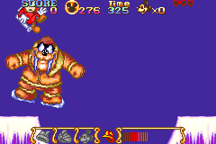

1game1week - Week 26 (6/25/25) - Disney's Magical Quest Starring Mickey and Minnie
Hey all! It's week 26! (6/25 -> 7/2)
And this marks the halfway point in the challenge.
I'll be real with y'all, I just finished typing the stats post and I've been working on it nearly the entire day. I can't yap anymore.
The flip phone saga is going fine. Directions and MFA were the killer, so I've used my smartphone very sparingly for things I don't have a good alternative to. MFA should be mostly mitigated as I transferred most of my MFA to Yubico Authenticator, which uses a YubiKey on desktop.
Actually, since I'm remembering, I'll yap.
During all that trouble of setting up MFA on Yubikey, I set up a passkey for PSN. This does two very important things:
- Disables password authentication.
- Signs me out of everything (except PS3 apparently)
This is normal behavior. By design it's smart to kick every session off when you change your authentication methods.
The problem was getting back in. Signing in to PSN on PS5 requires you to scan a QR code, go to the PS App, approve, etc- which is a problem, because I'm pretending I don't have a smartphone.
There is an alternative here: using a password to log in instead of cross device via QR. However, since I set up a passkey, this is disabled. So my only option is QR.
You see this everywhere nowadays: signing into something as simple as Netflix on a Roku or Smart TV will tell you to go to netflix.com/tv8, which is a site that asks for a code displayed on your TV, and has you log in on your phone / computer, then passing the authentication to your TV / Roku etc.
So imagine my shock when I had no idea where to go. There was no playstation.com/tv8, or a readable link to go to. Of course, there is the QR code, but that's not really something I'm looking to because in this scenario, I can't "scan" it.
Until... I realized I could just use my capture card, take a screenshot of the QR code, and feed it to a QR reader to get the link to sign in, which I was able to do successfully on my PC with my Yubikey.
You're telling me one of the biggest gaming companies decided not to include a very simple link to put in a code to sign in? How else would this be done? Take a picture somehow, and upload it to your computer, to then do the exact thing I did?
Why would we have that many steps, just to go to a link that works perfectly fine on a computer?
So many companies and people have the expectation of having a smartphone. I don't think it's necessarily a good way of handling authentication, but it's just how it is. While I suppose it's not unreasonable to believe if one has internet access and enough spare cash to buy a PS5, there's no reason to not have a quick link to go on a PC.
Anyways!
New games from 6/18 -> 6/24:
None! This is the third time this month.
Currently, my backlog is at +12 (lower is better, -1 from last week).
And onto 1g1w. Once again, a game is considered "beaten" if I've accomplished the main objective of the game.
GAME: Disney's Magical Quest Starring Mickey and Minnie
PLATFORM: GameBoy Advance
STARTED ON: 6/3
BEATEN ON: 6/3
TOTAL PLAYTIME: 3 hours and 32 minutes (tracked via Analogue Pocket)
Platformers are tough. This is a 2002 GBA remake (port?) of a 1992 SNES game.
While I fully accept I suck, I really think hitboxes in this game were something else. Think of something simple, like Mario, for example:
You run up to a Goomba in 1-1 and try jumping on it. This Goomba, instead of having hitboxes on its sides only, has hitboxes extending up its entire sides and into its body, with only a very small hurtbox exactly at the top of his sprite, so if you jump on it diagonally instead of straight from the top, you will die. That's how this game was.
If I jumped on one of the bosses slightly wrong, say jumped on his shoulder instead of directly on his head, I take damage, he doesn't, end of story.

Pictured: me getting hit by a boss for jumping on his shoulder
Like I said, though... I probably just suck.
With that said, it's not like it was hard, really. It's a short game that took me 3 hours to beat, had unlimited continues. Who cares if it takes a little while to beat a boss because of hitboxes? I can just try again as many times as I want from the beginning of the boss with no penalty other than score which I don't really care about.
In short, it's a decently short, sweet, and simple 2D platformer that I sucked at. It was honestly pretty fun. The costume changes made for ways to change how you approached bosses or normal enemies, as well as solving on-the-fly puzzles.
I enjoyed it more than I thought I would. This is a title I've probably had for close to two decades... but I can't quite pin down when I got it, so I have no clue how long I've had it.

Thanks for reading! If you need to contact me for any reason, please feel free to email me at aru@hoshikawa-aru.com.